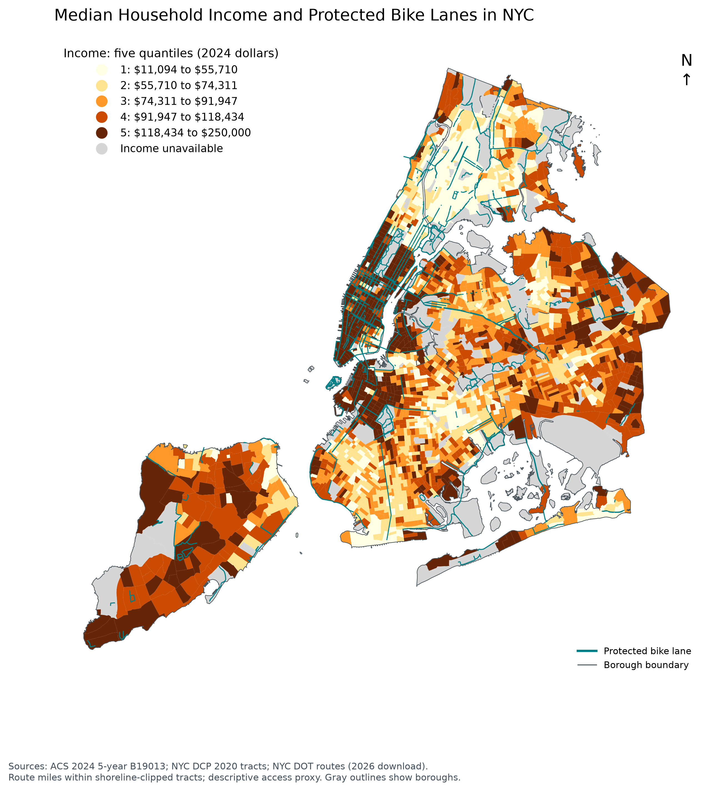
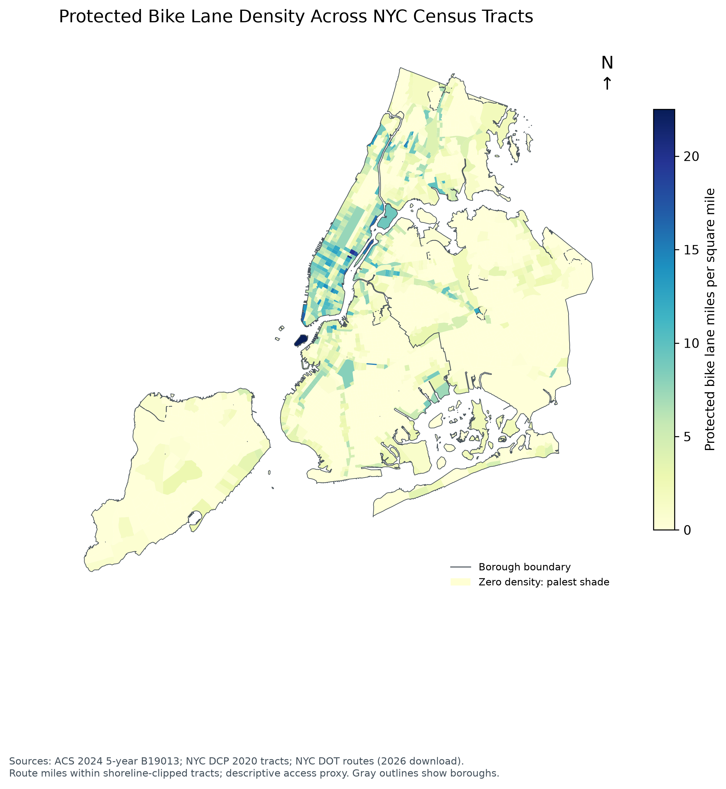
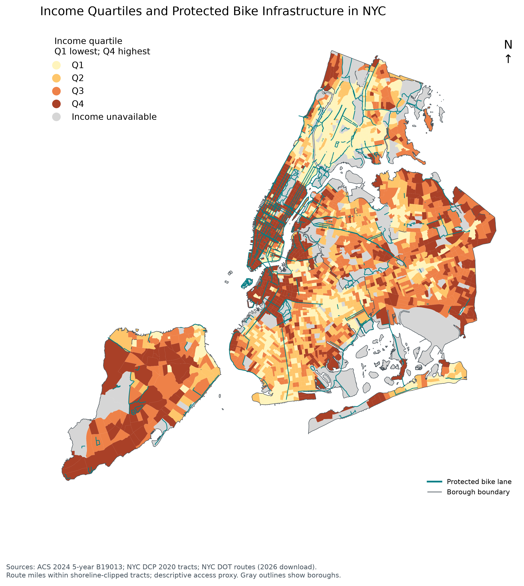

NYC income and protected bike routes
Click a map to view the full-size image. The PNG files are saved alongside this gallery.
Median Household Income and Protected Bike Lanes in NYC

Protected Bike Lane Density Across NYC Census Tracts

Income Quartiles and Protected Bike Infrastructure in NYC

Median Household Income vs. Protected Bike Lane Density

Average Protected Bike Lane Density by Income Quartile

Share of NYC Census Tracts With Protected Bike Lanes by Income Quartile